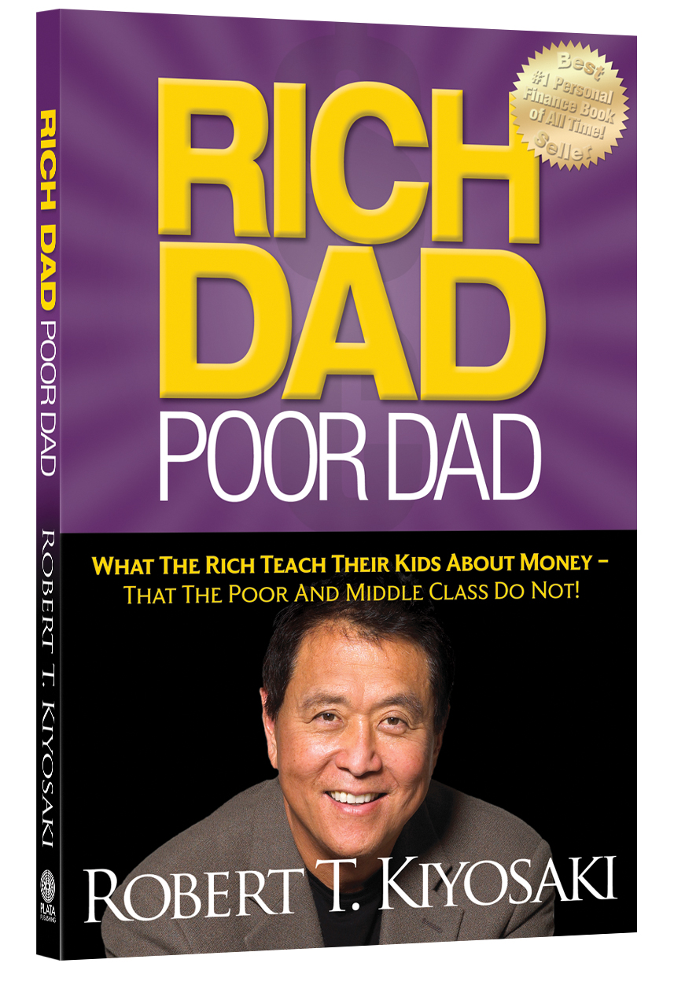
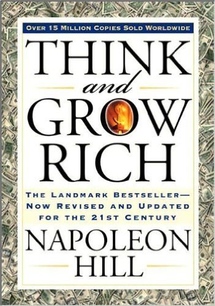
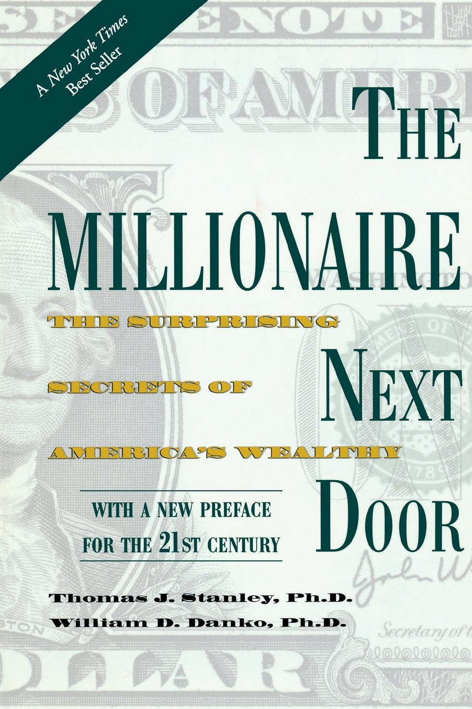
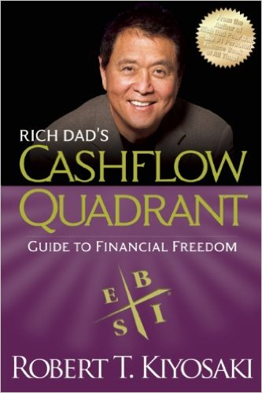
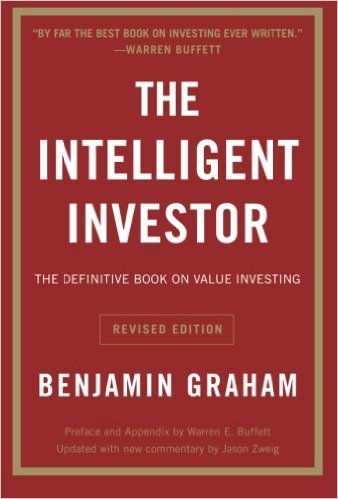

Best Personal Finance Books of 2017
Below you will find a list of the best books to read if you want to start with the topic of personal finance.
Rich Dad Poor Dad
By Robert Kiyosaki
In Rich Dad Poor Dad, the #1 Personal Finance book of all time, Robert Kiyosaki shares the story of his two dads: his real father, whom he calls his ‘poor dad,’ and the father of his best friend, the man who became his mentor and his ‘rich dad.’
One man was well educated and an employee all his life, the other’s education was “street smarts” over traditional classroom education and he took the path of entrepreneurship…a road that led him to become one of the wealthiest men in Hawaii.
Robert’s poor dad struggled financially all his life, and these two dads—these very different points of view of money, investing, and employment—shaped Robert’s thinking about money.
Think And Grow Rich
By Napoleon Hill
In Think and Grow Rich, Hill draws on stories of Andrew Carnegie, Thomas Edison, Henry Ford, and other millionaires of his generation to illustrate his principles. This book will teach you the secrets that could bring you a fortune.
It will show you not only what to do but how to do it. Once you learn and apply the simple, basic techniques revealed here, you will have mastered the secret of true and lasting success.
The Millionaire Next Door
By Thomas J. Stanley and William D. Danko
The bestselling The Millionaire Next Door identifies seven common traits that show up again and again among those who have accumulated wealth. Most of the truly wealthy in this country don't live in Beverly Hills or on Park Avenue-they live next door.
Rich Dad's CASHFLOW Quadrant
By Robert Kiyosaki
Rich Dad’s CASHFLOW Quadrant is a guide to financial freedom. It’s the second book in the Rich Dad Series and reveals how some people work less, earn more, pay less in taxes, and learn to become financially free.
CASHFLOW Quadrant was written for those who are ready to move beyond job security and enter the world of financial freedom. It’s for those who want to make significant changes in their lives and take control of their financial future.
Robert believes that the reason most people struggle financially is because they've been spent years in school but were never been taught about money. Robert’s rich dad taught him that this lack of financial education is why so many people work so hard all their lives for money… instead of learning how to make money work for them.
The Intelligent Investor
By Benjamin Graham
This classic text is annotated to update Graham's timeless wisdom for today's market conditions...
The greatest investment advisor of the twentieth century, Benjamin Graham, taught and inspired people worldwide. Graham's philosophy of "value investing" -- which shields investors from substantial error and teaches them to develop long-term strategies -- has made The Intelligent Investor the stock market bible ever since its original publication in 1949.
Over the years, market developments have proven the wisdom of Graham's strategies. While preserving the integrity of Graham's original text, this revised edition includes updated commentary by noted financial journalist Jason Zweig, whose perspective incorporates the realities of today's market, draws parallels between Graham's examples and today's financial headlines, and gives readers a more thorough understanding of how to apply Graham's principles.
Vital and indispensable, this HarperBusiness Essentials edition of The Intelligent Investor is the most important book you will ever read on how to reach your financial goals.
It is especially worth adding that the most known student of Graham's was Warren E. Buffett, who wrote the preface and appendix for this book.
How to Win Friends & Influence People
By Dale Carnegie

'How to Win Friends and Influence People' is one of the first best-selling self-help books ever published. Just after publishing, it quickly exploded into an overnight success, eventually selling more than 15 million copies worldwide, and pioneering an entire genre of self-help and personal success books.
With an enduring grasp of human nature, it teaches his readers how to handle people without letting them feel manipulated, how to make people feel important without inspiring resentment, how win people over to your point of view without causing offence, and how to make a friend out of just about anyone.
Millions of people around the world have improved their lives based on the teachings of Dale Carnegie. This classic book will turn your relationships around and improve your interactions with everyone in your life.